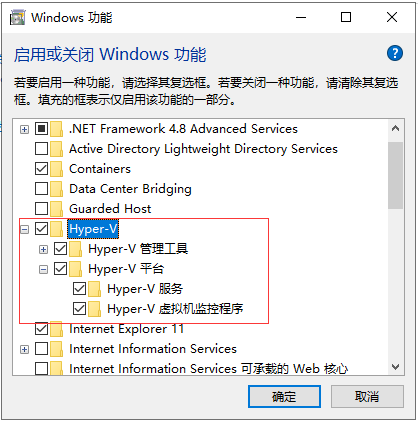
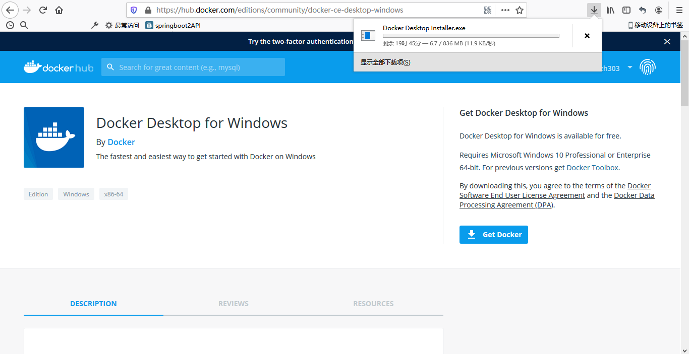
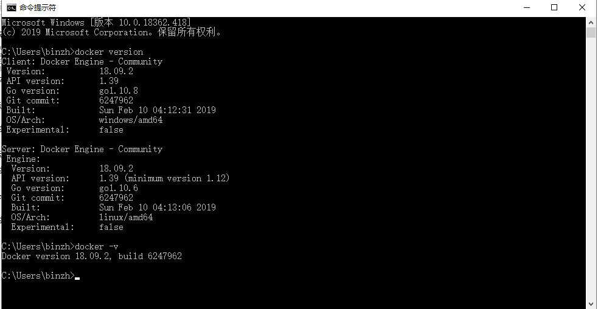
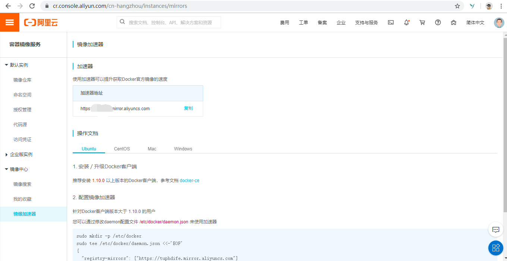
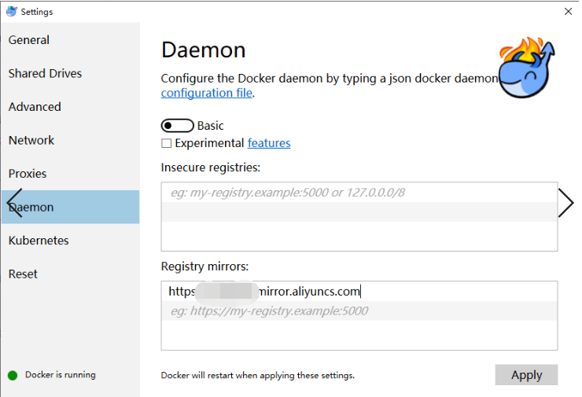
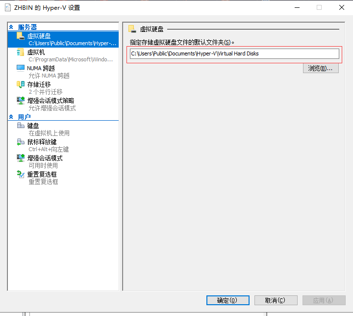
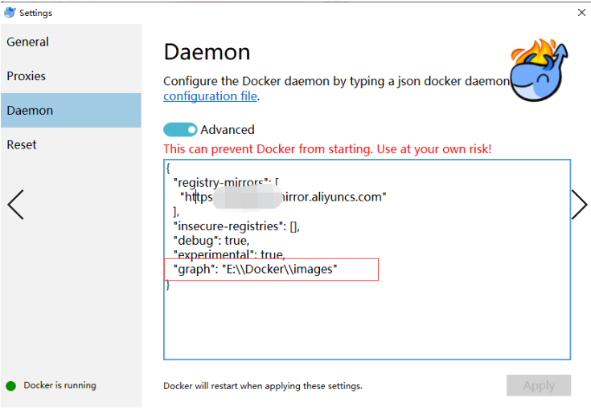
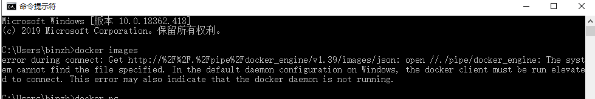

由于我本地的mysql版本比较低，最近想着要升级一下mysql版本，鉴于docker容器的火热，就想着在本地装个docker环境，然后下载最新版的mysql镜像，完成mysql8.0的安装。电脑是windows 10版本。
打开控制面板-->程序-->启用或关闭windows功能，勾选Hyper-V,然后点击确定即可。

点击确定后，提示重启系统。
下载地址：https://hub.docker.com/editions/community/docker-ce-desktop-windows,先要注册账号才能下载，这样直接下载非常慢。

另一种获取方式是关注公众号 情系IT 回台回复docker获取安装exe文件。
获取到exe文件后，直接点击下一步即可完成安装，安装后会提示重启电脑。桌面上会出现docker图标，点击启动。打开windows命令行模式，输入docker version或docker -v查看，若出现如下信息则安装成功。

阿里云镜像加速地址：https://cr.console.aliyun.com/cn-hangzhou/instances/mirrors
获取专属加速器地址，如下图：

打开docker，右键Settings-->Daemon-->Registry mirrors复制刚才的专属加速器地址到此即可，这样就完成了国内镜像加速。

win10下的docker有可视化操作界面和命令行操作，下载了docker-ce.exe双击后就自己开始到结束自动完成，默认安装到了C盘目录下，也就是很多默认的参数或配置文件都在C盘目录下。考虑C盘是系统盘，docker使用过程中可能会拉取很多镜像文件，所以我们需要把docker默认的镜像文件存储地址修改一下。
打开Hyper-V管理器，1.开始菜单右键->控制面板->管理工具->Hyper-V 管理器
右键选择Hyper-V设置,修改下图所示的存储路径为你要存储的位置。

然后Settings-->Daemon-->Advanced中添加如下配置：


解决办法为：
cd "C:\Program Files\Docker\Docker"
DockerCli.exe -SwitchDaemon这样我们就完成windows10的docker安装，下一章我们将进行mysql8.0镜像的安装与运行。
如果文章对您有帮助，请记得点赞关注哟~
欢迎大家关注我的公众号<情系IT>，每日技术推送文章供大家学习参考。